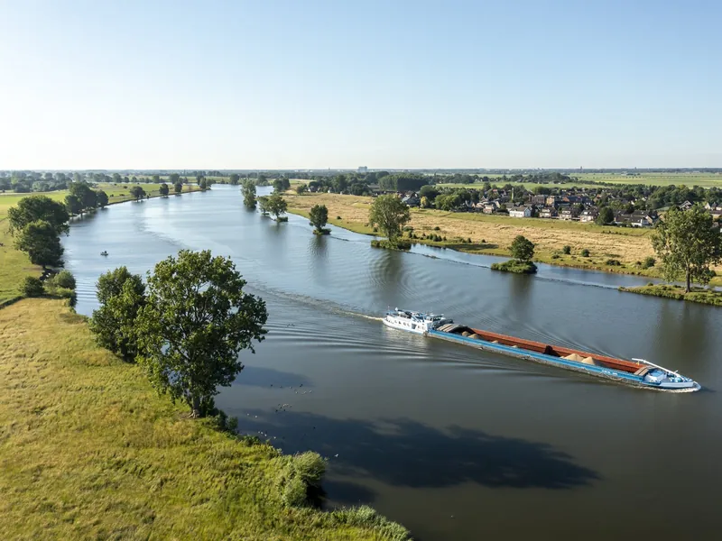

Wat het dashboard doet
Doel is een snel, visueel eerste overzicht van bedrijven die mogelijk schadelijke stoffen lozen. Dat gebeurt door databronnen te koppelen, zoals SBI-codes, sectorale informatie en mogelijke stoflozingen (ZZS en KRW).
Voor wie
Waterschappen, Rijkswaterstaat, provincies, drinkwaterbedrijven, gemeenten en omgevingsdiensten brengen zo mogelijke lozers in het Maasstroomgebied in beeld, met filters per RWZI-gebied, bevoegd gezag, gemeente, postcode of stofgroep.

Hoe partners het gebruiken
Het dashboard is een eerste stap: op basis van de selectie bepalen toezichthouders, handhavers, vergunningverleners, beleidsmakers en drinkwaterbedrijven gerichter waar extra aandacht of onderzoek nodig is.
Niet alles tegelijk. Eerst de bedrijven en stoffen waar nader onderzoek het meest relevant is.